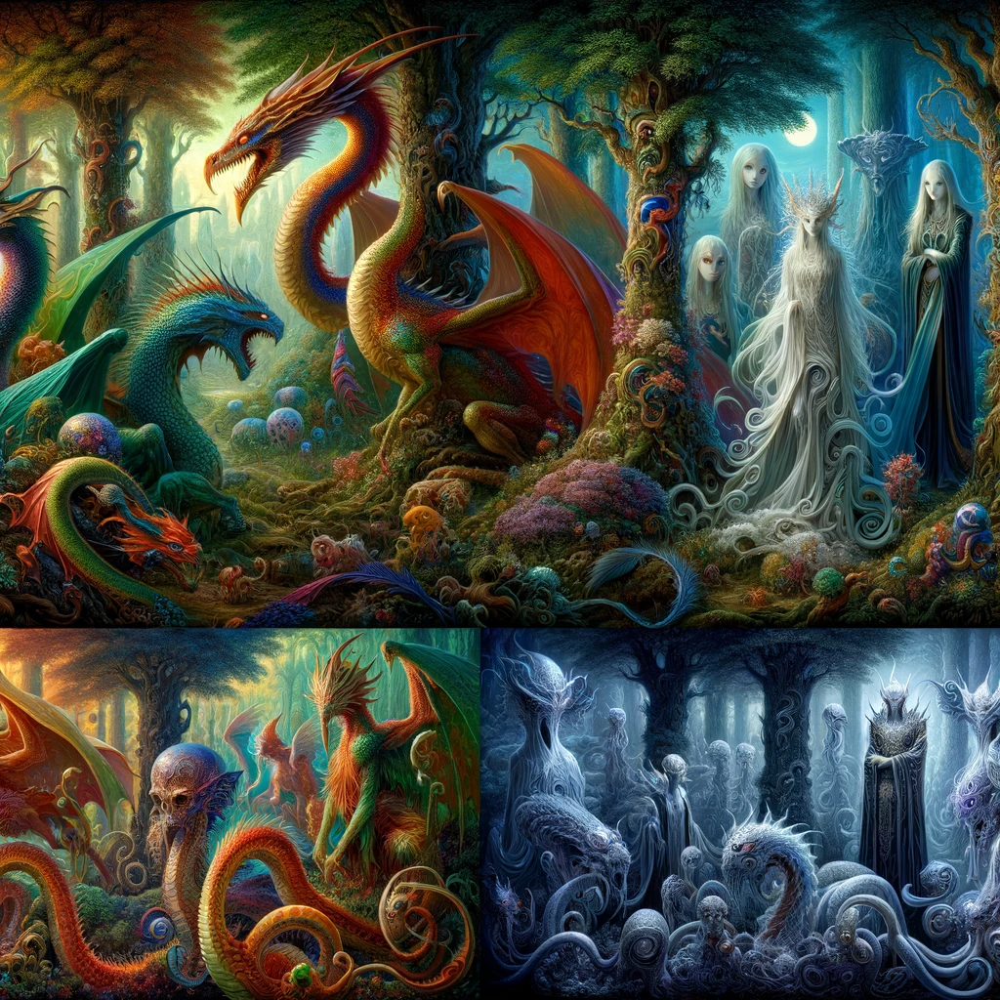
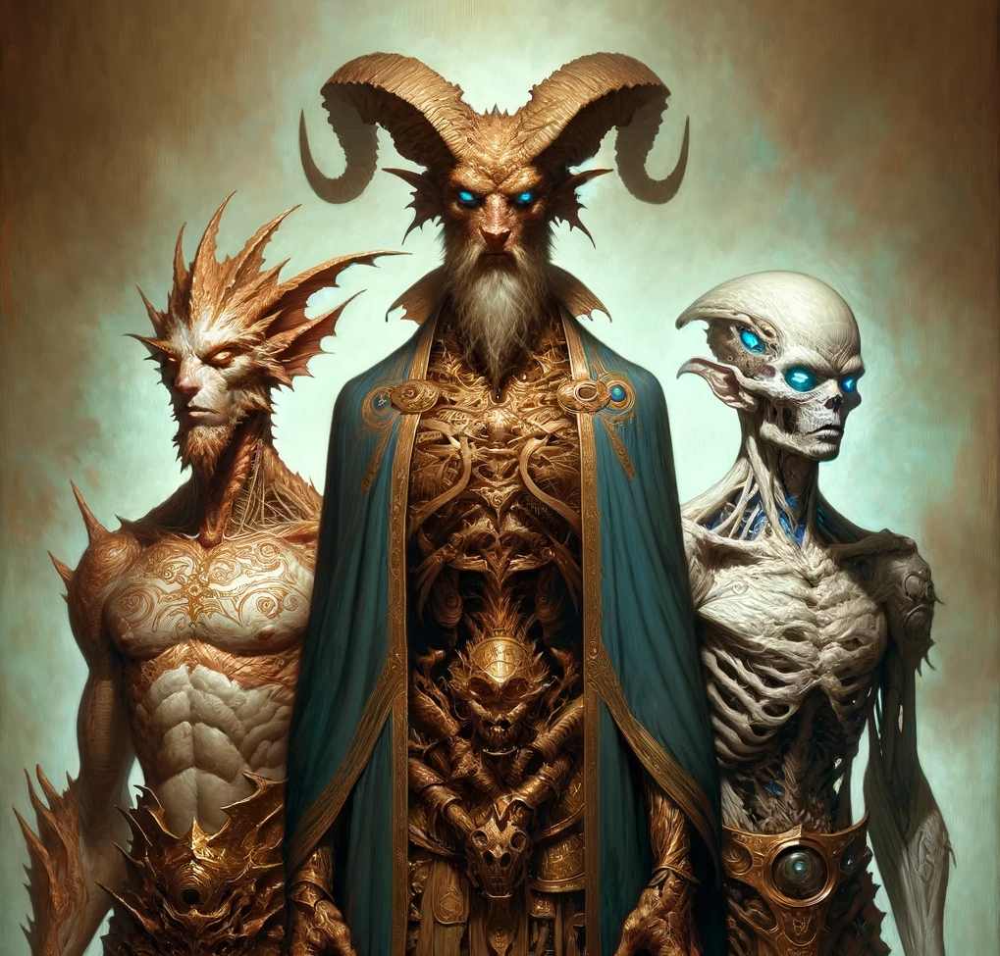
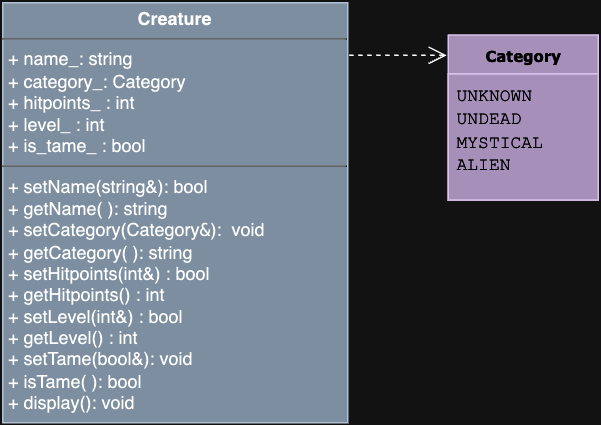

CSCI 235 - Spring 2024 - Term Project
Algorithmic Adventures II: The Exponential Creature Odyssey

This semester you will embark on an extraordinary journey developing the infrastructure for a captivating Creature-world simulation. Set within the enchanting depths of a mythical world, your simulation will offer participants a unique open-world experience where they get to capture and tame fantastic Creatures.
As the stories always go, the main character, Selfa Ensert, is tasked to collect multiple Creatures for a mysterious and powerful wizard, allegedly for a Creature zoo, and definitely not for a world-dominating army. Participants of your simulation will be able to interact with various Creature of which there are three distinct categories: the Undead, the Mystical, and the Alien.
As participants explore the world, they can encounter creatures such as Dragons, Ghouls or Mindflayers, all extraordinary beings, each with their own stories and Adventures.
Each Creature possesses unique skills, abilities, and quirks, and interactions between creatures are not just about battling to defeat others; it's about forming diverse alliances that can adapt to any situation.
This is a baseline project whose objective is to get you acquainted with the platforms we will use in this course and to refresh your knowledge of basic OOP. You will implement the Creature class. In order to successfully complete this project, we strongly recommend that you look back to your CSCI 135 coursework as a reference.
First of all, this project will introduce you to GitHub Classroom so you can work with git version control. All projects in this course will be distributed via GitHub Classroom and submitted to Gradescope via GitHub. We truly hope you will start establishing best practices of version control, INCREMENTAL coding, testing and debugging (i.e. code, test and debug one function at a time); you will need it in the near future, so better start now!
This part is absolutely essential!!! Don't skip it and do it before proceeding to Part 2
If you don’t already have one, go to https://github.com/ and create a GitHub account. You will likely use your GitHub account professionally in the future, so choose a username you will want to keep.
Next, watch this video to brush-up on or learn the basics of git and GitHub: https://www.youtube.com/watch?v=MJUJ4wbFm_A
For this project we will use GitHub Classroom. The following video will guide you through the entire process - from accepting an assignment to submitting your solution: https://www.youtube.com/watch?v=AHDCokfgcSo
Although the video is about a different course, the instructions are the same (with different repo and file names). The only difference is that we will not add a distribution branch, so you can ignore the part where it says to execute the two git commands in the readme file; there are not extra instructions in the readme file on our repo).
The link to accept the GitHub Classroom assignment can be found on Blackboard
The above video will also show you how to submit to Gradescope via GitHub. Make sure to refer back to these instructions when it’s time to submit.
For ALL projects, you will receive 15% points for documentation. These are the requirements:
All files must have a comment preamble with, at minimum, your name, date and a description of the code implemented in that file (a rough idea of what this document is)
All functions (declarations and implementations) must be preceded by a comment preamble including any of the following that is appropriate for the function
@pre: describes any precondition
@param: one for each parameter the function takes
@return: describes the return type
@post: describes any postconditions
These together fully specify the usage of the function. You will notice that we often provide these in the project specification to describe what functionality you should implement. You will copy/paste these preambles into your code, your code will be fully documented and easy to read and use by anyone. It is not useless work, it will help you learn how to document your code. Having said that, sometimes we must add extra guidance given the scholastic context, like giving you hints for implementation. These are not things you would normally include in your documentation of professional code. Whenever you will write additional functions not in the project specification (this will be more common in later projects), you will be expected to comment your functions in a similar way, even when the preambles are not provided by the specification.
All non-trivial functions must have inline comments. Any block of code that is not self-explanatory must be preceded by a comment describing what it does (e.g., have one English sentence before each loop or conditional describing what it does.) One helpful way to do this, is to write a comment bullet list of what a function must do as you set off to implement it, then add the code below each bullet item. There you have your inline comments!
All files and all functions must be commented. Yes both .hpp and .cpp!!! It is a lot of copy/paste, but it is not useless. If someone is reading through your code to understand what it does, they shouldn't have to consult the comments in a different file!
Creature Class :You will implement the Creature class.

You must always separate interface from implementation(Creature.hpp and Creature.cpp), and you ONLY EVER include a class' interface (.hpp) This will be an implicit assumption in this course going forward. Work through the tasks sequentially (implement and test). Only move on to a task when you are positive that the previous one has been completed correctly. Remember that the names of classes and methods must exactly match those in this specification (FUNCTION NAMES, PARAMETER TYPES, RETURNS, PRE AND POST CONDITIONS MUST MATCH EXACTLY). This class has only accessor and mutator functions for its public data members. Recall that accessor functions (e.g. getName()) are used to access the private data members (e.g. all getName() will do is return name_, the private data member) and are therefore declared const, while mutator functions (e.g. setName()) give a value to the data members, and do not modify it's parameters, which will be passed by const reference.
Remember, you must thoroughly document your code!!!

Every Creature has a Name, Category, Hitpoints, Level, and a boolean if the creature is Tame.
The Creature class must define the following type INSIDE the class definition:
An enum named Category with values {UNKNOWN, UNDEAD, MYSTICAL, ALIEN}
The Creature class must have the following private member variables:
private:- The name of the creature (a string in UPPERCASE)- The category of the creature (an enum)- The creature's hitpoints (an integer)- The creature's level (an integer)- A boolean flag indicating whether the creature is tame
The Creature class must have the following public member functions:
x/**Default constructor.Default-initializes all private members.Default creature name: "NAMELESS".Booleans are default-initialized to False.Default enum value: UNKNOWNDefault Hitpoints and Level: 1.*//**Parameterized constructor.@param : A reference to the name of the creature (a string). Set the creature's name to NAMELESS if the provided string contains non-alphabetic characters.@param : The category of the creature (a Category enum) with default value UNKNOWN@param : The creature's hitpoints (an integer) , with default value 1 if not provided, or if the value provided is 0 or negative@param : The creature's level (an integer), with default value 1 if not provided, or if the value provided is 0 or negative@param : A flag indicating whether the creature is tame, with default value False@post : The private members are set to the values of the corresponding parameters. The name is converted to UPPERCASE if it consists of alphabetical characters only, otherwise it is set to NAMELESS.*/
Hint: Notice the default argument in the parameterized constructor.
x/**@param : the name of the Creature, a reference to string@post : sets the Creature's name to the value of the parameter in UPPERCASE.(convert any lowercase character to uppercase)Only alphabetical characters are allowed.: If the input contains non-alphabetic characters, do nothing.@return : true if the name was set, false otherwise*/setName/**@return : the name of the Creature*/getName/**@param : a reference to Category, the category of the Creature (an enum)@post : sets the Creature's category to the value of the parameter: If the given category was invalid, set category_ to UNKNOWN.*/setCategory/**@return : the category of the Creature (in string form)*/getCategory/**@param : a reference to integer that represents the creature's hitpoints@pre : hitpoints >= 0 : Characters cannot have negative hitpoints(do nothing for invalid input)@post : sets the hitpoints private member to the value of the parameter@return : true if the hitpoints were set, false otherwise*/setHitpoints/**@return : the value stored in hitpoints_*/getHitpoints/**@param : a reference to integer level@pre : level >= 0 : Characters cannot have a negative level@post : sets the level private member to the value of the parameter(do nothing for invalid input)@return : true if the level was set, false otherwise*/setLevel/**@return : the value stored in level_*/getLevel/**@param : a reference to boolean value@post : sets the tame flag to the value of the parameter*/setTame/**@return true if the creature is tame, false otherwiseNote: this is an accessor function and must follow the same convention as all accessor functions even if it is not called getTame*/isTame/**@post : displays Creature data in the form:"[NAME]\nCategory: [CATEGORY]\nLevel: [LEVEL]\nHitpoints: [Hitpoints]\nTame: [TRUE/FALSE]"*/display
To help you establish a good practice for testing, we will make the testing of your code part of the assignment. After the first few projects, this will simply be your regular development practice (thoroughly test every function you implement before moving to the next function), and we will no longer request that you submit a test file.
If you want to submit to Gradescope before completing this test file, you can simply submit an empty main function, or a partially implemented function. Comment out any untested or buggy code.
Submit a file called test.cpp tat includes only a main function that does the following:
x2.1- Instantiate a creature with the default constructor- Set its hitpoints to 10 using the appropriate setter function.- Set its level to 5 using the appropriate setter functions- Set its tame flag to True using the appropriate setter function.- Print out the creature's information using the display() function:Expected output:NAMELESSCategory: UNKNOWNLevel: 5Hitpoints: 10Tame: TRUE2.2- Instantiate a creature with the parameterized constructor with the following creature details:Name: WormyCategory: MYSTICALLevel: 2Hitpoints: 3- Set Wormy as Tame with the appropriate setter function.- Print out the creature's information using the display() function:Expected output:WORMYCategory: MYSTICALLevel: 2Hitpoints: 3Tame: TRUE
You will submit your solution to Gradescope via GitHub Classroom (see video linked above). The autograder will grade the following files only:
Creature.hpp
Creature.cpp
Although Gradescope allows multiple submissions, it is not a platform for testing and/or debugging and it should not be used for that. You MUST test and debug your program locally. To help you not rely too much on Gradescope for testing, we will only allow 5 submissions per day. Before submitting to Gradescope you MUST ensure that your program compiles using the provided Makefile and runs correctly on the Linux machines in the labs at Hunter (see detailed instructions on how to upload, compile and run your files in the “Programming Guidelines” document). That is your baseline, if it runs correctly there it will run correctly on Gradescope, and if it does not, you will have the necessary feedback (compiler error messages, debugger or program output) to guide you in debugging, which you don’t have through Gradescope. “But it ran on my machine!” is not a valid argument for a submission that does not compile. Once you have done all the above you submit it to Gradescope.
How to compile with your Makefile:
In terminal, in the same directory as your Makefile and your source files, use the following command
xxxxxxxxxxmake rebuild
This assumes you did not rename the Makefile and that it is the only one in the current directory.
You must always implement and test your programs INCREMENTALLY!!! What does this mean? Implement and TEST one method at a time. For each class and each function within that class:
Implement one function/method and test it thoroughly (write a main file with multiple test cases + edge cases if applicable).
Only when you are certain that function works correctly and matches the specification, move on to the next.
Implement the next function/method and test in the same fashion.
How do you do this? Write your own main() function to test your classes (we will provide one with this first project, but you can always add to it). In this course we will not grade your test program, but you must always write one to test your classes. Choose the order in which you implement your methods so that you can test incrementally: i.e. implement constructors then accessor functions, then mutator functions. Sometimes functions depend on one another. If you need to use a function you have not yet implemented, you can use stubs: a dummy implementation that always returns a single value for testing. Don’t forget to go back and implement the stub!!! If you put the word STUB in a comment, some editors will make it more visible.
Correctness 80% (distributed across unit testing of your submission)
Documentation 15%
Style and Design 5% (proper naming, modularity, and organization)
This project is due on 2/8.
No late submissions will be accepted.
You must start working on the projects as soon as they are assigned to detect any problems and to address them with us well before the deadline so that we have time to get back to you before the deadline. There will be no extensions and no negotiation about project grades after the submission deadline.
Help is available via drop-in tutoring in Lab 1001B (see Blackboard for schedule). You will be able to get help if you start early and go to the lab early. We only have 2 UTAs in the lab, the days leading up to the due date will be crowded and you will not be able to get much help then.
Authors: Georgina Woo, Tiziana Ligorio